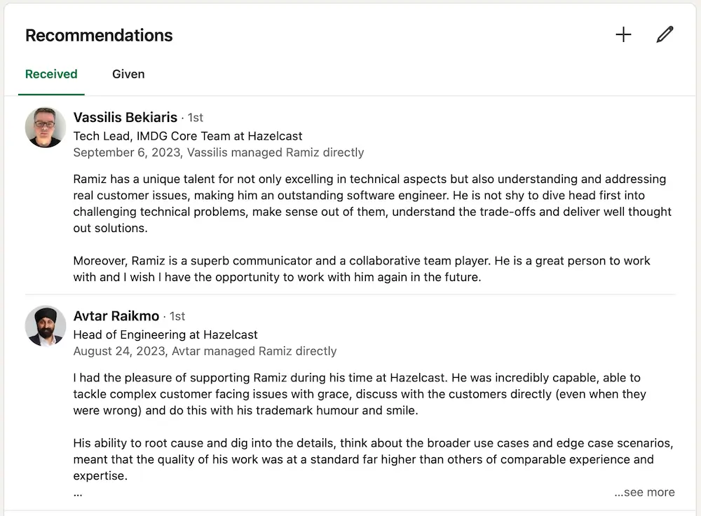
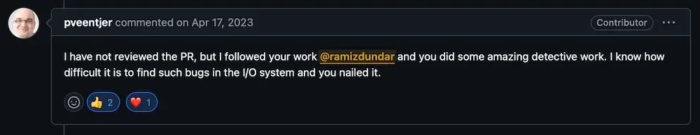
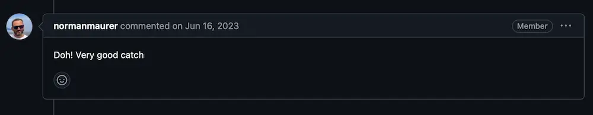
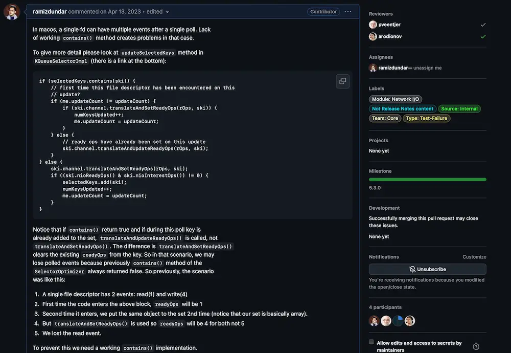
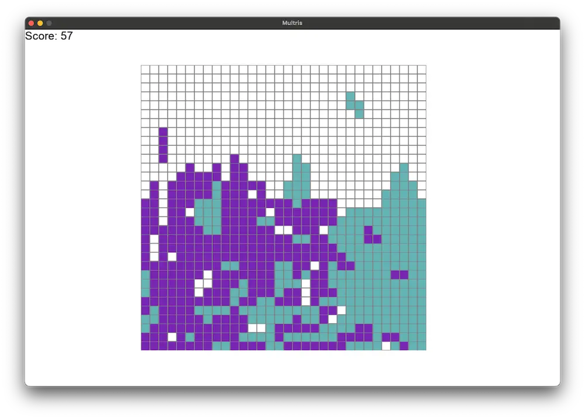

Welcome to my website! I'm a software engineer with over 4 years of experience specializing in distributed
systems and artificial intelligence, with a particular focus on generative transformer models (both in CV
and NLP). 🚀
I'm passionate about performance and scalability and always aim to create efficient solutions. Currently,
I'm pursuing my master's degree at Brown University, where I'm leading a project that parallelizes Bash
scripts before distributing them across nodes. 💻✨
I'm seeking full-time opportunities starting in May 2025 and am open to both relocation and remote work!
Feel free to explore my work and connect. Let's build something amazing together! 🌍
Know me!

What my managers say about me. See more in my LinkedIn profile.

What my lead thinks about my work, source.

What others thinks about my work, source. Norman Maurer is one of the core developers
of Netty and a current Distinguished Engineer at Apple

See how I submit my pull requests. More in here.
Screenshot is from this PR.
My advisor, Nikos Vasilakis, and I, along with the
colleagues I'm leading, are working on a drop-in replacement for Bash called Fish. Our system
parallelizes Bash scripts before distributing them across nodes, with the ability to recover from
node failures. I was offered a paid summer internship at Brown University for this work, which has
been an almost yearlong project, and we plan to submit it to OSDI 2025 in December. Throughout
this project, I've gained extensive experience with Bash scripting, Python, Go, and gRPC.
Hazelcast started as a distributed in-memory key-value store
and expanded into processing and storage. I joined the Jet (stream processing engine) team as an
intern and moved to the core team shortly after. I was then offered a full-time position and since
it was my first full-time job, I hold very fond memories of this company and learned a lot about
stream processing, concurrency, distributed systems, Java, and its memory model. Before I left for
my master's, I was also part of the TPC team, which aimed to redesign Hazelcast with a
thread-per-core architecture, similar to ScyllaDB or Redpanda. Through this effort, I learned more
about Linux storage APIs and their trade-offs.
During my time at PragmaCraft, I worked on a project that aimed to summarize the content of
webpages for a given search query in Google search results. I used a combination of extractive and
abstractive summarization techniques to achieve this. I familiarized myself with transformers and
BERT, which were very new at that time. However, because Google implemented the snippet feature,
the project later evolved into Answie, which aimed to
provide semantic search for enterprises.
Nuke is a privacy-focused, open-source framework that enables application developers to efficiently
manage user data and comply with privacy regulations. As an example, we also implemented and tested
a basic CLI-based social media platform.
Multris is a multiplayer Tetris game that allows two players on different computers to compete or
collaborate in real-time on a shared game board simultaneously.

A gameplay screenshot from Multris, two players, one board